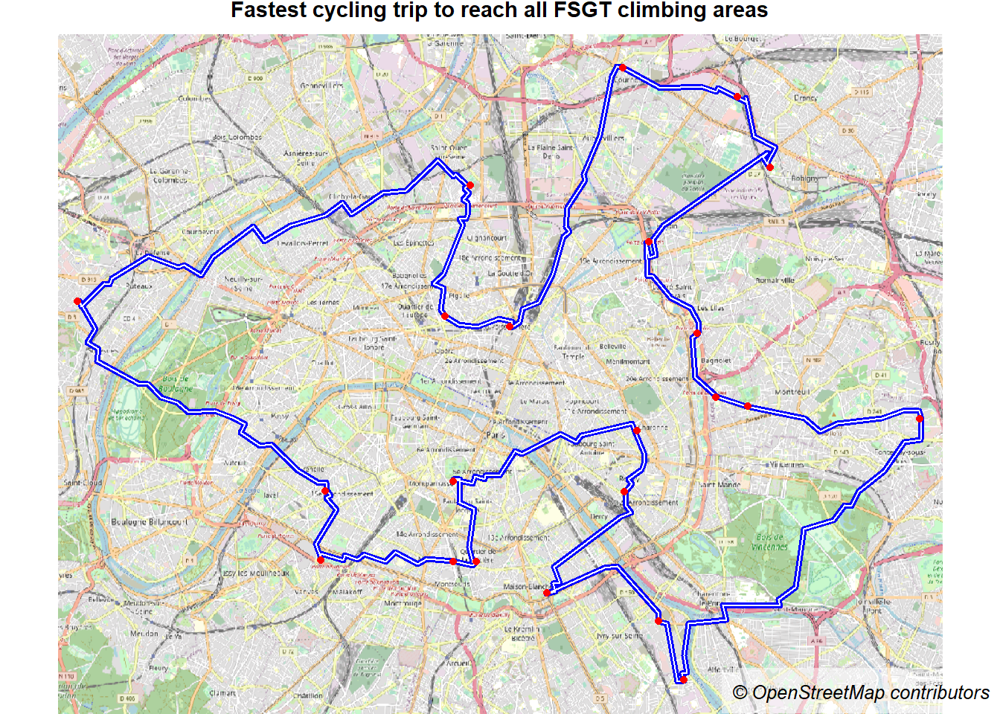

This documentation is in progress and may evolve in a near future… Sorry for the tips it may include !
The aim of this document consists in showing how to build, visualize and reproduce accessibility indicators by combining points of interest (POI) coming from the OpenStreetMap database, socio-economic indicators included in small territorial division (IRIS) and routing engines (OSRM).
The graphical outputs displayed in this notebook are also available in an Observable collection.
To introduce the reader to the issues raised by indoor sport-climbing in Paris, have a look to this notebook.
This Quarto document combines 2 programming languages : R for data processing, and ObservableJS for data visualizations.
Data processing with R
The entire R script can be found here. Geojson files resulting from the data processing are available in the data-conso folder of github project repository. These files are directly imported in Observable notebooks for data visualization.
Data sources
Three data sources, coming from three data providers, will be used:
IGN : The Contour…IRIS® édition 2020, which corresponds to the lowest territorial division in France (below the commune level).
OpenStreetMap : download of Point Of Interest (POI) and travel time calculation by bike between IRIS centroids and POI, using the OSRM routing engine.
Input data is not provided in the GitHub repository (too large files), but can easily be downloaded and used (no constraints of use).
Map layout
A bounding box of 5 km around Paris, without Bois de Boulogne and Bois de Vincennes for a better centering of the map layout around Paris.
A second bounding box (10 km around Paris) is created to catch OpenStreetMap POI and IRIS in the neighbourhood of this study area and avoid “border effects” for the upcoming travel-time indicators calculations.
Code
# 1. Map layout preparation at IRIS scale (source IGN)----library(sf)iris <-st_read("data-raw/CONTOURS-IRIS.shp", quiet =TRUE)# Extract Paris and delete # Bois-de-Vincennes / Boulogne Iris for map templateiris$dep <-substr(iris$INSEE_COM, 1, 2)paris <- iris[iris$dep =="75",]paris <- paris[!paris$NOM_IRIS %in%c("Bois de Vincennes 1","Bois de Vincennes 2","Bois de Boulogne 1","Bois de Boulogne 2","Bois de Boulogne 3"),]paris <-st_union(paris)# 5 km around Paris map layoutparis5k <-st_buffer(paris, 5000)paris5k <-st_as_sfc(st_bbox(paris5k, crs =2154))paris <- paris5k# 10 km around Paris (get OSM data) in long/latparis10k <-st_buffer(paris, 10000)paris10k <-st_as_sfc(st_bbox(paris10k, crs =2154))# Intersection with IRISiris10k <-st_intersection(iris, paris10k)# Bounding box for osm extraxtparis10k <-st_transform(paris10k, 4326)paris10k <-st_bbox(paris10k) paris10k <-as.vector(paris10k)
Feed IRIS with socio-economic data (INSEE)
Data is enriched by socio-economic data (disposible median income 2019 and total population 2018) for further analysis. We keep only “Habitation” IRIS (dedicated to dwellings) for origins-destinations calculations.
Code
# 2. Feed IRIS layer by socio-economic data (INSEE) ----library(readxl)# Population 2018 (IRIS)df <-read_xlsx("data-raw/base-ic-evol-struct-pop-2018.xlsx", skip =5, sheet ="IRIS")iris10k <-merge(iris10k[,c("CODE_IRIS", "NOM_IRIS", "TYP_IRIS", "NOM_COM")], df[,c("IRIS","P18_POP")],by.x ="CODE_IRIS", by.y ="IRIS", all.x =TRUE)# Median Income (2018)df <-read_xlsx("data-raw/BASE_TD_FILO_DISP_IRIS_2019.xlsx", skip =5, sheet ="IRIS_DISP")iris10k <-merge(iris10k, df[,c("IRIS","DISP_MED19")],by.x ="CODE_IRIS", by.y ="IRIS", all.x =TRUE)# Intersection with study areairis <-st_intersection(iris10k, paris5k)
Prepare IRIS for travel-time calculation
IRIS centroids are extracted. These points will be used for the origins of travel-time calculations. Only IRIS including dwellings are kept (TYP_IRIS == “H”).
These sf objects are transformed in latitude/longitude (origin-destination calculations requirements and for final export in geojson format).
Code
# Keep only habitation IRIS for origins calculationori <- iris10k[iris10k$TYP_IRIS =="H",]ori <-st_centroid(ori)# Transofrm in long/latori <-st_transform(ori, crs =4326)iris <-st_transform(iris, crs =4326)
Import OSM points of interest
Indoor sport climbing points of interest are downloaded from OpenStreetMap thanks to the osmdata R package (Mark Padgham (2022)).
To access to these OSM features, the OSM key-value pair (or OSM tag) must be set. For climbing areas, the most appropriate is sport=climbing. In the OpenStreetMap wiki, it is mentioned that “sport=climbing should be preferably applied to noded for artificial climbing walls”. Thus, we only consider points responding to the query.
The geographical coverage of the query covers a bounding box of 10 km around Paris (paris10k`).
The OSM attributes are transformed afterwards for further analytical purposes in order to differentiate private and associative structures, and bouldering areas and climbing walls (to different climbing practices).
I argue that the accuracy and completeness of the data is quite good : I have edited missing points on OpenStreetMap with my personal knowledge and upstream investigation :-)
For the presentation of the artificial climbing landscape in Paris and the difference between private - FSGT and FFME structures, have a look to this notebook.
Code
# 3. Extract OSM objects (climbing and map layout)----library(osmdata)# define a bounding boxq0 <-opq(bbox = paris10k) # extract climbing areasq <-add_osm_feature(opq = q0, key ='sport', value ="climbing")res <-osmdata_sf(q)dest <- res$osm_pointsdest[,"name"] <-iconv(dest$name, from ="UTF-8", to ="UTF-8")# Cleaningprivate <- dest[!is.na(dest$brand),] # Manage private and associative areasasso <- dest[!is.na(dest$federation),]asso$type <-"Associative structure"private$type <-"Speculative structure"dest <-rbind(asso, private)dest$federation[is.na(dest$federation)] <-"Private"# Find walls and bouldersdest[c("climbing.toprope", "climbing.boulder")][is.na(dest[c("climbing.toprope", "climbing.boulder")])] <-"no"dest$climbing_type <-ifelse(dest$climbing.toprope =='yes'& dest$climbing.boulder =="yes", 'Wall and bouldering',ifelse(dest$climbing.toprope =='yes'& dest$climbing.boulder =="no" , 'Wall',ifelse(dest$climbing.toprope =='no'& dest$climbing.boulder =="yes" ,'Bouldering', NA)))# Keep only attributes of interest and rename itcols <-c("osm_id", "name", "climbing_type", "climbing.length","climbing.routes", "type", "federation", "brand")dest <- dest[,cols]colnames(dest)[4:5] <-c("climbing_length", "climbing_routes")# Intersection with bouding box poi <-st_transform(dest, 2154)poi <-st_intersection(poi, paris5k)poi <-st_transform(poi, 4326)
The data preparation allows to prepare origins-destinations layers for travel-time calculation. Origins correspond to the IRIS layer (only type H : 2141 points). Destinations to artificial climbing areas (45 points).
We have now the origins and destinations required to compute travel-time calculations. The computation is realized using the osrm R package (Giraud (2022)). This package allows the computation of routes, trips, isochrones and travel distances matrices (travel time and kilometric distance).
Considering that the input data are quite important (more than 2000 origin points and 48 destination points) and to avoid to overload the OSRM demo server, I have run my own instance of OSRM based on docker container. The procedure to implement this solution is explained in the following documentation, or more specifically for Windows here.
Once it is done, the connection to the rounting engine is operational locally (with the URL http://localhost:5000/` for me).
With OSRM, it is possible to choose several profiles depending on the routing we want to use (car, bike, walking). In our case, we choose the bike profile: Cycling is a widespread practice (with public transport) for climbers to reach their activities in this kind of urban context. Moreover, it allows also to avoid to use the car profile, which underestimates the travel-time in metropolitan areas (trafic congestion not taken into account).
The bicycle profile is described in the github OSRM repository. Basically, the default speed is 15 km/h. It avoids the access to highways, reduce the driving speed by 30 % for unsafe roads. It is important to keep in mind that landforms (elevation) are not considered in the default profile. Some thoughts and solutions exist on the subject, using elevation rasters (Liedman (2022) ; Mapbox (2015)).
IRIS to climbing areas
The code below compute travel-time calculation between the geometric center of IRIS (ori) and artificial climbing areas (dest). It is done for all climbing structures and reproduced according to the type of climbing structure : private or associative structures. For associative structures, we distinguish the FSGT and FFME federations, that do not have exactly the same goals in term of practice.
Resulting travel-time matrixes are exported in the data-conso folder for other possible uses (and to avoid runing these important calculations systematically).
This heavy matrix is then manipulated to extract for each IRIS the following information :
Name of the nearest climbing structure by bike.
Type of structure (associative or speculative).
Time to reach it (in minutes).
Number of artificial climbing areas at less than 15 minutes by bike (N).
This calculation is done for all climbing structures (ALL), for private ones (PRIV), for those held by FFME federation (FFME) and for those held by the FSGT federation (FSGT). It is done with R base code. A function would reduce considerably the code length… Never mind, it is not the aim of this proof ;)
Code
# 5. Accessibility indicator creation (IRIS) ----# Name of the nearest structuredf <-read.csv("data-conso/bike-duration.csv", row.names ="X")colnames(df) <-as.character(dest$osm_id)osm_id <-colnames(df)[apply(df, 1, which.min)] # Nameosm_id <-data.frame(osm_id, stringsAsFactors =FALSE)osm_id$iris <-row.names(df)osm_id <-merge(osm_id, poi[,c("osm_id", "name", "federation")], by ="osm_id", all.x =TRUE)# Time to the nearest climbing areatime <-apply(df, 1, min) # Timetime <-data.frame(time, stringsAsFactors =FALSE)time$iris <-row.names(time)osm_id <-merge(osm_id, time, by ="iris", all.x =TRUE)osm_id$geometry <-NULL# Number of climbing area at less than 15 minutes by biken15mn <- dfn15mn <-data.frame(df, stringsAsFactors =FALSE)n15mn[n15mn <=15] <-1n15mn[n15mn >15] <-0n15mn$N <-rowSums(n15mn)n15mn$iris <-row.names(n15mn)osm_id <-merge(osm_id, n15mn[,c("iris", "N")], by ="iris",all.x =TRUE)osm_id <- osm_id[,c(1,3:6)]colnames(osm_id) <-c("CODE_IRIS", "ALL_NAME", "TYPE_STRUCT", "ALL_TIME","N_15MN")iris <-merge(iris, osm_id, by ="CODE_IRIS", all.x =TRUE)# Prive climbing club (fees $$$)# Name of the nearest structuredf2 <-read.csv("data-conso/bike-duration-priv.csv", row.names ="X")colnames(df2) <-as.character(dest_priv$osm_id)osm_id <-colnames(df2)[apply(df2, 1, which.min)] # Nameosm_id <-data.frame(osm_id, stringsAsFactors =FALSE)osm_id$iris <-row.names(df2)osm_id <-merge(osm_id, poi[,c("osm_id", "name", "type")], by ="osm_id", all.x =TRUE)# Time to the nearest climbing areatime <-apply(df2, 1, min) # Timetime <-data.frame(time, stringsAsFactors =FALSE)time$iris <-row.names(time)osm_id <-merge(osm_id, time, by ="iris", all.x =TRUE)osm_id$geometry <-NULL# Number of climbing area at less than 15 minutes by biken15mn <- df2n15mn <-data.frame(df2, stringsAsFactors =FALSE)n15mn[n15mn <=15] <-1n15mn[n15mn >15] <-0n15mn$N <-rowSums(n15mn)n15mn$iris <-row.names(n15mn)osm_id <-merge(osm_id, n15mn[,c("iris", "N")], by ="iris",all.x =TRUE)osm_id <- osm_id[,c(1,3,5:6)]colnames(osm_id) <-c("CODE_IRIS", "PRIV_NAME", "PRIV_TIME","N_PRIV_15MN")iris <-merge(iris, osm_id, by ="CODE_IRIS", all.x =TRUE)# FFME associative structure# Name of the nearest structuredf3 <-read.csv("data-conso/bike-duration-ffme.csv", row.names ="X")colnames(df3) <-as.character(dest_ffme$osm_id)osm_id <-colnames(df3)[apply(df3, 1, which.min)] # Nameosm_id <-data.frame(osm_id, stringsAsFactors =FALSE)osm_id$iris <-row.names(df3)osm_id <-merge(osm_id, poi[,c("osm_id", "name", "type")], by ="osm_id", all.x =TRUE)# Time to the nearest climbing areatime <-apply(df3, 1, min) # Timetime <-data.frame(time, stringsAsFactors =FALSE)time$iris <-row.names(time)osm_id <-merge(osm_id, time, by ="iris", all.x =TRUE)osm_id$geometry <-NULL# Number of climbing area at less than 15 minutes by biken15mn <- df3n15mn <-data.frame(df3, stringsAsFactors =FALSE)n15mn[n15mn <=15] <-1n15mn[n15mn >15] <-0n15mn$N <-rowSums(n15mn)n15mn$iris <-row.names(n15mn)osm_id <-merge(osm_id, n15mn[,c("iris", "N")], by ="iris",all.x =TRUE)osm_id <- osm_id[,c(1,3,5:6)]colnames(osm_id) <-c("CODE_IRIS", "FFME_NAME", "FFME_TIME","N_FFME_15MN")iris <-merge(iris, osm_id, by ="CODE_IRIS", all.x =TRUE)# FSGT associative structure# Name of the nearest structuredf4 <-read.csv("data-conso/bike-duration-fsgt.csv", row.names ="X")colnames(df4) <-as.character(dest_fsgt$osm_id)osm_id <-colnames(df4)[apply(df4, 1, which.min)] # Nameosm_id <-data.frame(osm_id, stringsAsFactors =FALSE)osm_id$iris <-row.names(df4)osm_id <-merge(osm_id, poi[,c("osm_id", "name", "type")], by ="osm_id", all.x =TRUE)# Time to the nearest climbing areatime <-apply(df4, 1, min) # Timetime <-data.frame(time, stringsAsFactors =FALSE)time$iris <-row.names(time)osm_id <-merge(osm_id, time, by ="iris", all.x =TRUE)osm_id$geometry <-NULL# Number of climbing area at less than 15 minutes by biken15mn <- df4n15mn <-data.frame(df4, stringsAsFactors =FALSE)n15mn[n15mn <=15] <-1n15mn[n15mn >15] <-0n15mn$N <-rowSums(n15mn)n15mn$iris <-row.names(n15mn)osm_id <-merge(osm_id, n15mn[,c("iris", "N")], by ="iris",all.x =TRUE)osm_id <- osm_id[,c(1,3,5:6)]colnames(osm_id) <-c("CODE_IRIS", "FSGT_NAME", "FSGT_TIME","N_FSGT_15MN")iris <-merge(iris, osm_id, by ="CODE_IRIS", all.x =TRUE)
Characterizing the POI neighbourhood
Then, the socio-economic neighbourhood of each climbing area is characterized.
The previous matrix is transposed (lines <> columns). For each climbing structure, we extract the IRIS located at less than 15 minutes by bike and to produce the following indicators :
Total population at less than 15 minutes by bike. This can be considered as an amount of “local social demand”.
Minimum, mean and maximum of median income of IRIS at less than 15 minutes by bike.
Moreover, we can be interested by defining the accessibility of climbing areas without taking into account any territorial division, which can introduce numerous bias, due to MAUP effects. This is done by building iscochrons of equivalent time-distance coming from climbing areas. This is done with the potential R package (Timothée Giraud (2020)) and its function equipotential. Below are reminded the required steps to create polygons of equipotential from a regular grid of points :
Create a regular grid (150m resolution in our case) and extract the centroids.
Compute travel time indicators with the osrmtable function of the osrm R package, from grid centroids to climbing areas.
Get the minimum value of the resulting matrix and join the result to the regular grid layer.
Create polygons of equipotential, by defining the desired thresholds and the indicator we are interested in (which climbing area travel-time).
Code
## 4.3 Isochrones from a regular grid to climbing areas ----# Compute travel time from grid to climbing areas# Create grid and extract centroids (cell size = 150 m)mygrid <-st_make_grid(paris5k, cellsize =150)mygrid <-st_centroid(mygrid)mygrid <-st_sf(ID =1:length(mygrid), geometry = mygrid)dest <-st_transform(dest, 2154)dest_priv <- dest[dest$type =="Speculative structure",] dest_fsgt <- dest[dest$federation =="FSGT",]# Compute travel time from grid centroids to all climbing areasdf5 <-osrmTable(src = mygrid, dst = dest, measure ="duration")df5 <-data.frame(df5$duration)write.csv(df5, "data-conso/grid-bike-duration.csv", row.names =FALSE)df5 <-read.csv("data-conso/grid-bike-duration.csv")colnames(df5) <-as.character(dest$osm_id)time <-data.frame(mygrid$ID, apply(df5, 1, min)) # find minimum valuecolnames(time) <-c("ID", "TIME_ALL")mygrid <-merge(mygrid, time, by ="ID", all.x =TRUE) # merge time to grid# Compute travel time from grid centroids to private climbing areasdf6 <-osrmTable(src = mygrid, dst = dest_priv, measure ="duration")df6 <-data.frame(df6$duration)write.csv(df6, "data-conso/grid-bike-duration_priv.csv", row.names =FALSE)df6 <-read.csv("data-conso/grid-bike-duration_priv.csv")colnames(df6) <-as.character(dest_priv$osm_id)time <-data.frame(mygrid$ID, apply(df6, 1, min)) # find minimum valuecolnames(time) <-c("ID", "TIME_PRIV")mygrid <-merge(mygrid, time, by ="ID", all.x =TRUE) # merge time to grid# Compute travel time from grid centroids to FSGT climbing areasdf7 <-osrmTable(src = mygrid, dst = dest_fsgt, measure ="duration")df7 <-data.frame(df7$duration)write.csv(df7, "data-conso/grid-bike-duration_fsgt.csv", row.names =FALSE)df7 <-read.csv("data-conso/grid-bike-duration_fsgt.csv")colnames(df7) <-as.character(dest_fsgt$osm_id)time <-data.frame(mygrid$ID, apply(df7, 1, min)) # find minimum valuecolnames(time) <-c("ID", "TIME_FSGT")mygrid <-merge(mygrid, time, by ="ID", all.x =TRUE) # merge time to grid# Compute isochrones# define breaks (based on quantie analysis)library(potential)thr <-c(0, 2.5, 5, 7.5, 10, 12.5, 15, 20, 25, 30, max(mygrid$TIME_FSGT))iso_all <-equipotential(x = mygrid, var ="TIME_ALL", breaks = thr, mask = paris5k)iso_fsgt <-equipotential(x = mygrid, var ="TIME_FSGT", breaks = thr, mask = paris5k)iso_priv <-equipotential(x = mygrid, var ="TIME_PRIV", breaks = thr, mask = paris5k)
Output
The map below displays the location of the climbing areas in the study area (white dots), the travel-time by bike required to reach each points of the 150m regular grid (little dots) and the isochrones deducted from these values.
osrmTrip is a function from the osrm package (Giraud (2022)) which allows to get the travel geometry between multiple unordered points. The output is a sf LINESTRING with 2 components : duration (in minutes) and distance (in kilometers).
This function is applied to the climbing areas held by the FSGT federation.
To reach the 22 climbing areas of the FSGT federation located in the study area, the osrmTrip function returns that the fastest cycling trip around these climbing areas can be done in 420.93 minutes and 88.3846 kilometres.
Code
library(maptiles)osm <-get_tiles(x = trip, crop =TRUE, zoom =13)theme <-mf_theme(mar =c(0,0,1.2,0), inner =FALSE, line =1.2, cex = .9, pos ="center", tab =FALSE)mf_raster(osm)mf_map(trip, lwd =4, add =TRUE, col ="blue")mf_map(trip, lwd =1, col ="white", add =TRUE)mf_map(dest_fsgt, pch =20, col ="red", add =TRUE)mf_title("Fastest cycling trip to reach all FSGT climbing areas")mf_credits(get_credit("OpenStreetMap"), pos ="bottomright", cex = .8, bg ="#ffffff80")

Manual corrections (out of OSM)
I noticed that in the OpenStreetMap database some attributes could be specified more precisely. However, my use does not correspond to the one recommended by OSM : climbing_length is not climbin_max. Moreover, this attribute has been set directly in OSM by the private brand.
Consequently, I prefer not to change these attributes in the OSM database, but directly in my R programme.
Code
# Correct MurMur and Rename ESC15poi[17,"climbing_length"] <-17poi[16,"name"] <-"ESC 15 - La Plaine"poi[31,"name"] <-"ESC 15 - Croix Nivert"
Simplify geometries
Geometries are quite detailed. The library rmapshaper (Andy Teucher (2022)) is used to simplify the layer. 9 % of the points constituting the polygons are kept. Then, the IRIS layer is aggregated in communes for the map layout.
We also extract the IRIS located at less than 15 minutes from a artificial climbing area for some upcoming maps.
Code
library(rmapshaper)iris <-ms_simplify(iris, keep =0.09)# Communes aggregation (layout)com <-aggregate(iris[,c("INSEE_COM", "NOM_COM")],by =list(iris$INSEE_COM),FUN = head, 1)# Extract IRIS at less than 15 minutes by bikeiris15 <- iris[iris$ALL_TIME <15,]iris15 <- iris15[!is.na(iris15$ALL_TIME),]
Export results
Data preparation is over, we can go the data visualization section. Resulting geojson (poi, iris ad communes) are exported in three separated geojson. These files are available in the Github repository.
Code
# Export IRIS, POI, com layersst_write(com, "data-conso/com.geojson")st_write(iris, "data-conso/iris.geojson")st_write(poi, "data-conso/poi.geojson")st_write(iris15, "data-conso/iris15.geojson")# Export material related to isochronsmygrid <-st_transform(mygrid, 4326)iso_all <-st_transform(iso_all, 4326)iso_fsgt <-st_transform(iso_fsgt, 4326)iso_priv <-st_transform(iso_priv, 4326)st_write(mygrid, "data-conso/mygrid.geojson")st_write(iso_all, "data-conso/iso_all.geojson")st_write(iso_fsgt, "data-conso/iso_fsgt.geojson")st_write(iso_priv, "data-conso/iso_priv.geojson")# Export material related to travel-tripst_write(trip, "data-conso/trip.geojson")
Data visualization with Observable JavaScript (ojs)
Observable is a startup founded by Mike Bostock and Melody Mechfessel, who initiated an on-line plateform to collaboratively explore, analyze, visualize and communicate with data on the Web.
The computing language is Observable JavaScript (ojs). It is possible to include this programming language in Quarto chunks.
This section imports some visualizations realized in an Observable collection. Have a look to this resource to see the overall project !
All the maps produced below use the bertin.js library. Have a look to the excellent documentation in its npm repository or in this Observable Collection to see the possibilities offered by this library to the map creator !
Import consolidated data
Geojson files coming from the data preparation precessing realized in a R programming language and described above are imported.
iris : IRIS intersecting the study area (polygons layer).
poi : climbing structures included the study area (points layer).
com : Muncipilaties interesecting thhe study area (polygons layer). This layer will only be used for the map layout and better understand the location of the poi and iris layers : IRIS, the lowest territorial division in France, is not really known by the population.
The first two geographical layers include attributes coming from the data preparation process, that will be mapped and ploted in the next section of the document. In this part, we present the layers in several ways to understand the information we have in hand for producing the data visualization.
Interactive map
Made with geoverview library. Click on the points / polygons to have an overview of their respective attributes and values.
Code
data =newMap([ ["Climbing areas (dots)", poi], ["IRIS (polygons)", iris], ["Layout municipalities (polygons)", com]])viewof geojson = Inputs.select(data, { label:"Select a geojson" })viewof style = Inputs.select(["voyager","night","fulldark","positron","icgc","osmbright","hibrid"], { label:"Select a style" })map =view(geojson, {style: style})
OpenStreetMap identifier (responding to the query sport=climbing in the bounding box of the study area)
(c)OpenStreetMap and contributors
name
Name of the artificial climbing area
(c)OpenStreetMap and contributors
climbing_type
If the articial climbing area is a wall (need a rope to climb), dedicated to bouldering, or both
(c)OpenStreetMap and contributors, Ronan Ysebaert
climbing_length
Max. height of the wall (if adapted, for walls and not for bouldering)
(c)OpenStreetMap and contributors
climbing_routes
Number of climbing routes, materialized by belay station (if adapted, for walls and not for bouldering). Note that in artificial climbing, a same belay station can serve several climbing routes
(c)OpenStreetMap and contributors
type
If the climbing area is speculative (manage by a private brand) or associative
(c)OpenStreetMap and contributors, Ronan Ysebaert
federation
Name of the manager (FFME, FSGT or private)
(c)OpenStreetMap and contributors, Ronan Ysebaert
brand
Name of the brand managing the private structure
(c)OpenStreetMap and contributors
SUM_POP18
Population at less than 15 minutes by bike of the artificial climbing area (IRIS centroids).
INSEE, (c)OpenStreetMap and contributors, Ronan Ysebaert
MIN_REV19
Mininum of the median income for the IRIS located at less than 15 minutes by bike
INSEE, (c)OpenStreetMap and contributors, Ronan Ysebaert
MOY_REV19
Mean of the Median income for the IRIS located at less than 15 minutes by bike
INSEE, (c)OpenStreetMap and contributors, Ronan Ysebaert
MAX_REV19
Maximum of the Median income for the IRIS located at less than 15 minutes by bike
INSEE, (c)OpenStreetMap and contributors, Ronan Ysebaert
Wall’s characteristics
This interactive map displays the artificial climbing offer in Paris and its surroundings, according artificial climbing specificities: top rope climbing (walls) / bouldering, climbing height, number of routes, manager of the articial climbing area.
Code
lambert93 ="+proj=lcc +lat_1=49 +lat_2=44 +lat_0=46.5 +lon_0=3 +x_0=700000 +y_0=6600000 +ellps=GRS80 +towgs84=0,0,0,0,0,0,0 +units=m +no_defs"// Map parameters to play with itviewof ind = Inputs.radio(["climbing_length","climbing_routes"], {label:"Wall height / Number of routes",value:"climbing_length"})viewof k = Inputs.range([10,300], { label:"Spikes height",step:1,value:90 })viewof w = Inputs.range([2,30], { label:"Spikes / dots width",step:1,value:15 })// Spike map with tooltipsmap1 = bertin.draw({params: {width:750,projection: lambert93,extent: com },layers: [ {type:"spikes",geojson: poi,values: ind,fillOpacity:0.2,k: k,w: w,fill: {type:"typo",values:"federation",colors: ["#9990f0","#fcb456","#ba0b25"],leg_title:`Wall's managers`,leg_x:600,leg_y:550 },stroke: {type:"typo",values:"federation",colors: ["#9990f0","#fcb456","#ba0b25"] },leg_x:15,leg_y:15,leg_round:0,leg_title:`Height (meters) or routes number`,tooltip: {fields: ["$name","$climbing_length","(height in meters)","$climbing_routes","(nb. routes)","$federation","(manager)" ],fill: ["black","black","black","black","black","black","black"],fontWeight: ["bold","normal","normal","normal","normal","normal","normal" ],fontSize: [14,12,10,12,10,12,10],col:"white" } }, {geojson: poi,symbol_size:10* w,symbol:"circle",fill: {type:"typo",values:"climbing_type",colors: ["white","lightgrey","grey"],leg_title:`Climbing type`,leg_x:600,leg_y:430 },stroke: {type:"typo",values:"federation",colors: ["#9990f0","#fcb456","#ba0b25"] },strokeWidth:2,tooltip: {fields: ["$name","$climbing_type"],fill: ["black","black"],fontWeight: ["bold","normal"],fontSize: [12,10],col:"white" } }, {type:"text",position:"topright",text:"Climbing hot spots",frame_opacity:0.7,baseline:"hanging",fill:"black",fontSize:25,margin:4,fontWeight:"bold",fontFamily:"Ubuntu" }, {type:"layer",geojson: com,stroke:"white",fill:"peachpuff",tooltip: ["$NOM_COM"] }, {type:"scalebar",units:"miles" }, {type:"footer",text:"Sources: (c)OpenStreetMap and contributors, INSEE, IGN, 2022\nRealisation: Ronan Ysebaert, 2022" } ]})
Nearest wall
The nearest climbing area by bike from each populated IRIS by wall manager: private or associative (FSGT or FFME).
It displays the time by bike required to reach the nearest climbing area, for all structures or by manager type and from each IRIS centroids.
Code
viewof ind2 = Inputs.radio(["ALL_TIME","PRIV_TIME","FSGT_TIME","FFME_TIME"],{value:"ALL_TIME"})// Discretization methodviewof method2 = Inputs.select(["jenks","q6","quantile","equal","msd"], {label:"method",value:"quantile"})// nbreaksviewof nbreaks2 = Inputs.range([3,9], { label:"nbreaks",step:1,value:8 })// color palettesviewof pal2 = Inputs.select( ["Blues","Greens","Greys","Oranges","Purples","BuGn","BuPu","GnBu","OrRd","PuBuGn","PuBu","PuRd","RdPu","YlGnBu","YlGn","YlOrBr","YlOrRd","BrBG","PRGn","PiYG","PuOr","RdBu","RdGy","RdYlBu","RdYlGn","Spectral" ], {label:"colors",value:"RdYlBu" })// Choropleth map with tooltipsmap3 = bertin.draw({params: {width:750,projection: lambert93,extent: com },layers: [ {geojson: poi,symbol_size:100,symbol:"circle",fill:"white",strokeWidth:2.5,stroke: {type:"typo",values:"federation",colors: ["#9990f0","#fcb456","#ba0b25"] },tooltip: {fields: ["$name","$federation"],fill: ["black","black"],fontWeight: ["bold","normal"],fontSize: [12,10],col:"white" } }, {type:"text",position:"topright",text:"Time to reach the nearest\nartificial climbing area",frame_opacity:0.7,baseline:"hanging",fill:"black",fontSize:25,margin:4,fontWeight:"bold",fontFamily:"Ubuntu" }, {type:"layer",geojson: com,stroke:"black",fill:"none" }, {type:"layer",geojson: iris,fill: {type:"choro",values: ind2,nbreaks:8,method: method2,colors: pal2,leg_round:2,leg_title:`By bike (minutes)`,leg_x:15,leg_y:15,col_missing:"lightgrey",txt_missing:"Non dedicated to housing" },tooltip: {fields: ["$NOM_IRIS","$NOM_COM","$ALL_TIME","Bike time to the nearest Indoor climbing area" ],fill:"white",fontWeight: ["bold","normal","normal","normal"],fontSize: [11,11,10,8],col: ["black","black","black","black"] } }, {type:"scalebar",units:"kilometers", }, {type:"footer",text:"Sources: (c)OpenStreetMap and contributors, INSEE, IGN, 2022\nRealisation: Ronan Ysebaert, 2022" } ]})
Time to reach climbing areas (isochrones)
It shows with isochrones the area reachable from the network of climbing areas by bike in minutes. It is possible to see all climbing areas (default map) or filter by manager (private or FSGT).
The number of climbing areas reachable in 15 minutes by bike from the geometric centroid of each IRIS of the study area.
Code
viewof ind4 = Inputs.radio(["N_15MN","N_PRIV_15MN","N_FSGT_15MN","N_FFME_15MN"],{label:"Number - all / private / FSGT / FFME - indoor climbing areas at less than 15 minutes",value:"N_15MN"})// color palettesviewof pal4 = Inputs.select( ["Blues","Greens","Greys","Oranges","Purples","BuGn","BuPu","GnBu","OrRd","PuBuGn","PuBu","PuRd","RdPu", ], {label:"colors",value:"Greens" })// choropleth map with tooltipsmap4 = bertin.draw({params: {width:750,projection: lambert93,extent: com },layers: [ {geojson: poi,symbol_size:100,symbol:"circle",fill:"white",strokeWidth:2.5,stroke: {type:"typo",values:"federation",colors: ["#9990f0","#fcb456","#ba0b25"] },tooltip: {fields: ["$name","$federation"],fill: ["black","black"],fontWeight: ["bold","normal"],fontSize: [12,10],col:"white" } }, {type:"text",position:"topright",text:"Number of climbing areas reachable\nin less than 15 minutes",frame_opacity:0.7,baseline:"hanging",fill:"black",fontSize:25,margin:4,fontWeight:"bold",fontFamily:"Ubuntu" }, {type:"layer",geojson: com,stroke:"black",fill:"none" }, {type:"layer",geojson: iris,fill: {type:"choro",values: ind4,breaks: [1,2,3,4,5,6,7,8,9],colors: pal4,leg_round:2,leg_title:`Structures numbers`,leg_x:15,leg_y:15,col_missing:"lightgrey",txt_missing:"Non dedicated to housing" },tooltip: {fields: ["$NOM_IRIS","$N_15MN","Climbing areas at less than 15 minutes by bike" ],fill:"white",fontWeight: ["bold","normal","normal"],fontSize: [11,10,8],col: ["black","black","black"] } }, {type:"scalebar",units:"miles", }, {type:"footer",text:"Sources: (c)OpenStreetMap and contributors, INSEE, IGN, 2022\nRealisation: Ronan Ysebaert, 2022" } ]})
Climbing / biking tour !
It shows the fastest path to visit all the FSGT’s climbing areas by bike. To overcome this challenge, you will have to cycle for 88.39 km and 7.02 hours !
Code
viewof ind8 = Inputs.radio(["duration","distance"], {label:"Choose bike trip indicator",value:"duration"})// Discretization methodviewof method8 = Inputs.select(["jenks","q6","quantile","equal","msd"], {label:"method",value:"equal"})// Filter FSGT climbing areas onlyfsgt = bertin.subgeo({geojson: poi,field:"federation",operator:"==",array:"FSGT"})// Color paletteviewof pal8 = Inputs.select( ["Reds","Blues","Greens","Greys","Oranges","Purples","BuGn","BuPu","GnBu","OrRd","PuBuGn","PuBu","PuRd","RdPu","YlGnBu","YlGn","YlOrBr","YlOrRd","BrBG","PRGn","PiYG","PuOr","RdBu","RdGy","RdYlBu","RdYlGn","Spectral" ], {label:"colors",value:"Reds" })// Resulting map with a lot of things :) map8 = bertin.draw({params: {width:750,projection: lambert93,extent: com },layers: [ {geojson: fsgt,symbol_size:100,symbol:"circle",fill:"white",strokeWidth:2.5,stroke:"#ba0b25",tooltip: {fields: ["$name","$federation"],fill: ["black","black"],fontWeight: ["bold","normal"],fontSize: [12,10],col:"white" } }, {type:"text",position:"topright",text:"The FSGT's\nbiking / climbing tour !",frame_opacity:0.7,baseline:"hanging",fill:"white",fontSize:25,margin:4,fontWeight:"bold",fontFamily:"Ubuntu" }, {geojson: trip,strokeWidth:4,stroke: {type:"choro",values: ind8,method: method8,nbreaks:4,colors: pal8,leg_title:`Time (minutes) or distance (kilometres)\nbetween 2 climbing areas !`,leg_x:15,leg_y:15,leg_txtcol:"white",leg_round:0 },tooltip: {fields: ["$duration","minutes","$distance","kilometers"],fill: ["black","black"],fontWeight: ["bold","normal"],fontSize: [12,10,12,10],col:"white" } }, {type:"layer",geojson: com,stroke:"white",fill:"black" }, {type:"scalebar",units:"kilometers",fill:"white" }, {type:"footer",text:"Sources: (c)OpenStreetMap and contributors, INSEE, IGN, 2022\nRealisation: Ronan Ysebaert, 2022" } ]})
Demographic neighbourhood
Visualize the demographic neighbourhood of each climbing area : IRIS population at less than 15 minutes by bike from each climbing area.
Code
viewof k5 = Inputs.range([1,100], { label:"radius max",step:1,value:18 })// Proportional map and tooltipsmap5 = bertin.draw({params: {width:750,projection: lambert93,extent: com },layers: [ {geojson: poi,type:"bubble",k: k5,values:"SUM_POP18",leg_title:`Population in 15mn by bike neighbourhood`,leg_x:15,leg_y:15,leg_round:-2,fill: {type:"typo",values:"federation",colors: ["#9990f0","#fcb456","#ba0b25"],leg_title:`Wall's managers`,leg_x:600,leg_y:550 },strokeWidth:2.5,stroke:"white",tooltip: {fields: ["$name","$federation","$SUM_POP18","(Inhabitants in 15mn by bike neighbourhood)"],fill: ["black","black","black","black"],fontWeight: ["bold","normal","normal","normal"],fontSize: [14,12,12,10],col:"white" } }, {type:"text",position:"topright",text:"Population\nin climbing area's neighbourhood",frame_opacity:0.7,baseline:"hanging",fill:"black",fontSize:25,margin:4,fontWeight:"bold",fontFamily:"Ubuntu" }, {type:"layer",geojson: com,stroke:"black",fill:"none" }, {type:"layer",geojson: iris15,fill:"peachpuff",tooltip: {fields: ["$NOM_IRIS","$NOM_COM","$P18_POP","Total population (2018)" ],fill:"white",fontWeight: ["bold","normal","normal","normal"],fontSize: [11,11,10,8],col: ["black","black","black","black"] } }, {type:"scalebar",units:"kilometers", }, {type:"footer",text:"Sources: (c)OpenStreetMap and contributors, INSEE, IGN, 2022\nRealisation: Ronan Ysebaert, 2022" } ]})
Income neighbourhood
Visualize the level of wealth of each climbing area neighbourhood : IRIS median income at less than 15 minutes by bike from a climbing area. User can choose the minimum income, average income or maximum income of the IRIS at less than 15 minutes.
Code
viewof ind6 = Inputs.radio(["MIN_REV19","MOY_REV19","MAX_REV19"], {label:"Min/average/max median income in a 15 minutes by bike neighbourhood",value:"MOY_REV19"})// Discretization methodviewof method6 = Inputs.select(["jenks","q6","quantile","equal","msd"], {label:"method",value:"quantile"})// Nbreaksviewof nbreaks6 = Inputs.range([3,9], { label:"nbreaks",step:1,value:6 })// Color paletteviewof pal6 = Inputs.select( ["Blues","Greens","Greys","Oranges","Purples","BuGn","BuPu","GnBu","OrRd","PuBuGn","PuBu","PuRd","RdPu","YlGnBu","YlGn","YlOrBr","YlOrRd","BrBG","PRGn","PiYG","PuOr","RdBu","RdGy","RdYlBu","RdYlGn","Spectral" ], {label:"colors",value:"PuOr" })// IRIS layer opacityviewof opacity6 = Inputs.range([0,1], {label:"IRIS income opacity",step:0.1})// Resulting map with a lot of things :) map6 = bertin.draw({params: {width:750,projection: lambert93,extent: com },layers: [ {geojson: poi,symbol_size:300,symbol:"triangle",fill: {type:"choro",values: ind6,nbreaks: nbreaks6,method: method6,colors: pal6, },strokeWidth:2.5,stroke: {type:"typo",values:"federation",colors: ["#9990f0","#fcb456","#ba0b25"],leg_title:`Wall's managers`,leg_x:600,leg_y:550 },tooltip: {fields: ["$name","$federation","$MIN_REV19","(Minimum income in 15mn by bike neighbourhood)","$MOY_REV19","(Average income in 15mn by bike neighbourhood)","$MAX_REV19","(Average income in 15mn by bike neighbourhood)"],fill: ["black","black","black","black","black","black","black","black"],fontWeight: ["bold","normal","normal","normal","normal","normal","normal","normal"],fontSize: [14,12,12,10,12,10,12,10],col:"white" } }, {type:"text",position:"topright",text:"Income\nin climbing area's neighbourhood",frame_opacity:0.7,baseline:"hanging",fill:"black",fontSize:25,margin:4,fontWeight:"bold",fontFamily:"Ubuntu" }, {type:"layer",geojson: com,stroke:"black",fill:"none" }, {type:"layer",geojson: iris15,fill: {type:"choro",values:"DISP_MED19",nbreaks: nbreaks6,method: method6,colors: pal6,leg_round:-2,leg_title:`Median income (2019, euros)\nfor IRIS at less than 15km by bike\nfrom a climbing area`,leg_x:15,leg_y:15,col_missing:"lightgrey",txt_missing:"Non dedicated to housing" },fillOpacity: opacity6,tooltip: {fields: ["$NOM_IRIS","$NOM_COM","$DISP_MED19","Median income (2019, euros)" ],fill:"white",fontWeight: ["bold","normal","normal","normal"],fontSize: [11,11,10,8],col: ["black","black","black","black"] } }, {type:"scalebar",units:"kilometers", }, {type:"footer",text:"Sources: (c)OpenStreetMap and contributors, INSEE, IGN, 2022\nRealisation: Ronan Ysebaert, 2022" } ]})
Concluding methodological remarks
Extend the analysis
This methodological example showed a general methodology to combine institutional and crowd-sourced data to develop some simple indicators of accessibility to services of interest using open-source routing engines, and disseminate this with data visualizations frameworks. It is one possible implementation, among others. Other implementations could easily be envisaged.
Geographical coverage: The data preparation process presented above requires the definition of a geographical bounding box to extract OpenStreetMap points of interest (destinations of travel-time calculations) and an existing territorial division (the centroids being the origins of the travel-time calculations). This could be easily extented to other areas of interest, by modifying the Xmin, Xmax, Ymin and Ymax of the bounding box, or using other territorial divisions (a regular grid, for instance). The important things to consider is
Use other points of interest: This example used the OpenStreetMap tag defined by the key-value sport=climbing. Other map features could be investigated, such as amenities, tourism facilities or shops. The only element to consider is the geometric reference of the object in the OpenStreetMap database ; it could be nodes, ways or relations. In the case of sport=climbing tag, the OpenStreetMap Wiki reminds that sport=climbing should preferably applied to nodes for artificial climbing walls, our case. If the tag combines nodes and areas, it requires also to extract polygons responding to the tag and transform it into points, checking if the information is not included twice in the OpenStreetMap database.
Apply other profiles: In this example, the standard bike profile has been applied. The pedestrian and the car profile are also available and may be also used depending on the objective of the analysis. Whatever the profile used, it reminds important to the parameters of the profiles (car here, bike here and pedestrian here) to understand the calculations realized with routing engines, and their limitations. It is also possible to implement its own profile.
Usage precautions
One persisting criticism made to OpenStreetMap is its lack of quality, mainly due to its general and contributive organisations implying a high heterogeneity of contribution practices. Known problems are due to geometric accuracy (geographical positioning of OSM objects), completeness accuracy and completeness (missing information, not up-to-date) or problems due to the tags describing OSM objects (missing important tags, bad practices).
In that case, I made a personal survey to complete missing information (around 30 % of the information was missing) in OpenStreetMap database. It meant add some missing points in some cases, and in others to describe it with relevant climbing tags identified in the OpenStreetMap Wiki. At the end, it is sure that the input information is not perfect and would require double-checks by the community, but we can argue that it was not worst than in the begginning.
Whatever the use of OpenStreetMap you may made, taking a step back to these questions is very important to controla minimathe input information used for the travel-time calculations.
Another point to have in mind is the default parameters of osrm profiles: bike profile does not take into account the slope of the road ; the car profile does not take into account the trafic congestion. It may have significant impact on the travel-time calculations.
Nevertheless, we argue that OpenStreetMap is a wonderful initiative and as we try to demonstrate in this notebook, it is not too difficult to produce innovative indicators and data visualizations using open-source database and libraries.
Lambert, Nicolas. 2022a. Bertin.js: A JavaScript Library for Visualizing Geospatial Data and Make Thematic Maps for the Web. https://www.npmjs.com/package/bertin.
@online{ysebaert2022,
author = {Ronan Ysebaert},
title = {OSRM {Travel-time} Calculation with {R} and Data
Visualization with {Observable}},
date = {2022-06},
langid = {en}
}
For attribution, please cite this work as:
Ronan Ysebaert. 2022. “OSRM Travel-Time Calculation with R and
Data Visualization with Observable.” June 2022.